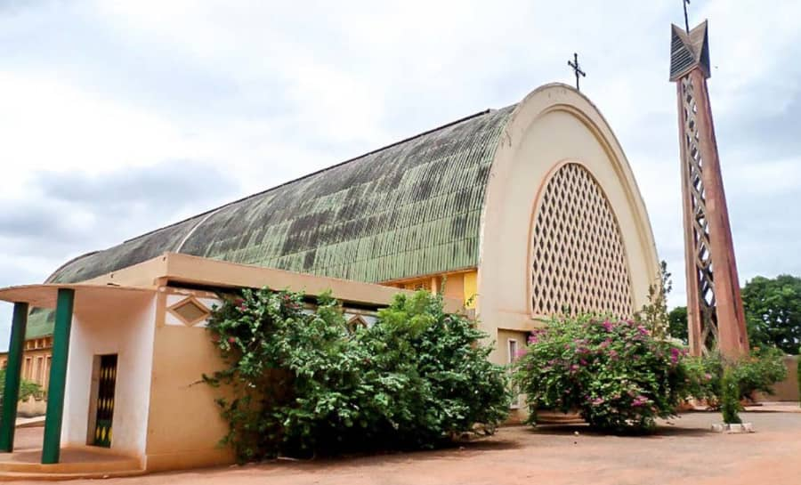

Description du la Cathédrale Notre Dame de Lourdes
Située entre la gare ferroviaire etle marché central de Bobo DioulasSo, la Cathédrale Notre Dame de Lourdes est un édifice religieux qui a été ouvert aux cultes dans les années 1961. Elle est classée parmi les patrimoines touristiques du Burkina Faso. Construite en 1957, elle est d'une architecture moderne et fut dédiée à Notre-Dame de Lourdes. Elle ouvre ses portes en 1961 et on peut voir la sculpture des testaments, ancien comme nouveau sur les sièges, dans des styles mêlant artistiquement les styles traditionnels et contemporains. C'est une très belle cathédrale qui doit être absolument visitée.